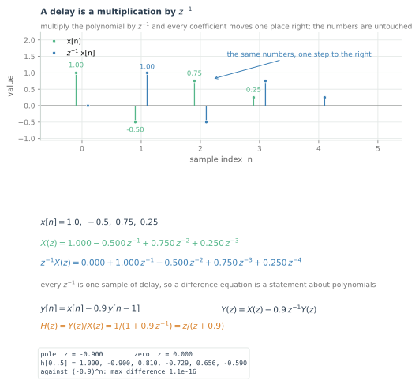
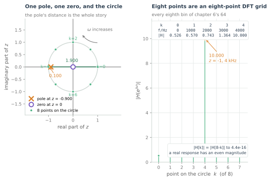
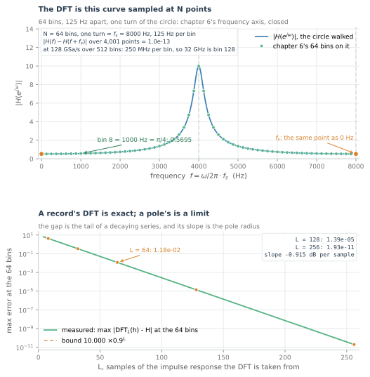
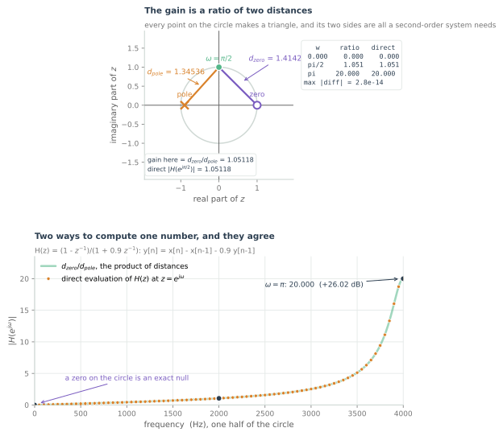
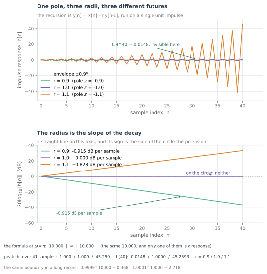
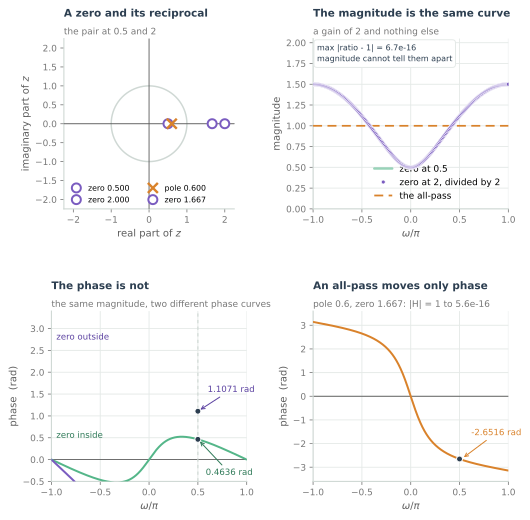

The z-Transform and the Unit Circle
The DFT is the z-transform sampled on a circle. This one picture unifies filters, stability and the frequency response.
The DFT of chapter 6 is a bank of N probes, and every probe is a complex exponential that turns a whole number of times across the record. Chapter 8 spent its length on what the record's edges do to those probes. Neither chapter asked the question that turns the transform from a measurement into an object: what if the probe is not restricted to the unit circle? The sum does not care. Replace $e^{-j2\pi k/N}$ with a free complex number $z$ and the same accumulation becomes a function of $z$ — the z-transform.
The detour is the point. Moving the probe off the circle turns a recursion into algebra: one sample of delay becomes a multiplication by $z^{-1}$, a difference equation becomes a ratio of two polynomials, and the ratio can be evaluated anywhere in the plane. Put the point back on the circle and it is the frequency response; put it inside, on or outside and it is the stability test; evaluate it at N equally spaced points and it is chapter 6. One picture answers all three, which is what the frequency-domain part has been building towards.
One system is enough: $y[n] = x[n] - 0.9\,y[n-1]$. This chapter does not design a filter, does not assume convolution, and does not do the region-of-convergence formalism — the next two parts of the course do those. It hands you the plane, the circle, and the two rules for reading them.
A delay is a multiplication
The z-transform of a sequence is
with $z$ complex. For a record of $N$ samples it is a polynomial of degree $N-1$ and nothing more: no integral, no limit, no approximation. Chapter 6's sum is this expression with $z$ pinned to $e^{j2\pi k/N}$, and the pinning is the only thing that made it look like a measurement.
One property does the work. Delay the sequence one sample and
so $z^{-1}$ is one sample of delay: a register in a datapath, a multiply in the algebra.

The figure's record is four numbers, $1.0$, $-0.5$, $0.75$, $0.25$, and $X(z) = 1.000 - 0.500z^{-1} + 0.750z^{-2} + 0.250z^{-3}$. Delay it and the polynomial becomes $z^{-1}X(z) = 0.000 + 1.000z^{-1} - 0.500z^{-2} + 0.750z^{-3} + 0.250z^{-4}$: the same coefficients one place right, an extra zero at the front. Nothing was transformed. The polynomial is the sequence, written in the form that makes delay a multiply.
Which makes a difference equation algebra:
A recursion has become a division. It was not solved; it was renamed, and the new name is an object that can be evaluated, factored and drawn.
The roots of the numerator are the zeros, where the output dies; the roots of the denominator are the poles, where the ratio blows up. Written as $z/(z+0.9)$, the system has a zero at $0$ and a pole at $-0.9$. Note the sign, because this is where readers trip: the coefficient is $-0.9$ and the pole is at $-0.9$, since $z + 0.9$ vanishes there.
z lives in a plane, and the circle is frequency
$z$ is complex, so the transform's argument lives in a plane. Write $z = re^{j\omega}$: the radius is a growth rate per sample, the angle a frequency per sample. The transform's sum converges in some region of that plane and not in the rest — the stability section is about where — but the algebra of $H(z)$ is defined wherever the denominator is not zero.
Put the point on the circle, $z = e^{j\omega}$, so $z^{-n} = e^{-j\omega n}$ and
which is the discrete-time Fourier transform, and what it measures is the frequency response. Walking the circle is sweeping frequency. One turn is $\omega = 2\pi$, and $\omega$ is radians per sample, so one turn is $f_s$ hertz: $\omega = 2\pi f/f_s$. That is chapter 6's frequency axis bent into a circle, and bin $k$ of an $N$-point DFT is the point at angle $2\pi k/N$, which is $k\,f_s/N$ hertz.

The figure is the chapter in one panel. The pole sits at $-0.9$ and the zero at the origin, and the circle is the frequency axis. Two distances carry the response: at $z=1$, DC, the pole is $1.900$ away; at $z=-1$, Nyquist, it is $0.100$ away. The zero at the origin is one unit from every point on the circle, so the gain is $1/d_{\text{pole}}$ — $0.5263$ at DC and $10.000$ at Nyquist.
The eight points are chapter 6's bins $0, 8, 16, \dots, 56$ — $0$, $1000$, $2000$, $3000$, $4000$ Hz and back down at $f_s = 8$ kHz — drawn sparse because eight is legible where sixty-four is a smear. The point at $\omega = \pi/4$ is 1 kHz, bin 8 of sixty-four, where the gain is $0.5695$. The values mirror about Nyquist because a real impulse response puts equal magnitudes at $\omega$ and $-\omega$: chapter 6's conjugate symmetry, seen on the circle.
The DFT is that circle, sampled
The claim is one substitution. For a record of $N$ samples,
which is chapter 6's definition, character for character. The DFT is the z-transform evaluated at $N$ equally spaced points on the unit circle. Bin $k$ is the point at angle $2\pi k/N$; the bin spacing $f_s/N$ is the angle spacing $2\pi/N$ measured in hertz.

The figure walks one turn. The curve is $|H(e^{j\omega})|$; the dots are chapter 6's sixty-four bins, 125 Hz apart, bin 8 at 1 kHz with $0.5695$, bin 32 at Nyquist with $10.000$. At 8 kHz the curve is back at $0.526$, its DC value, and $|H(f) - H(f+f_s)|$ over 4,001 points is $1.0\times10^{-13}$ — round-off, not structure.
The circle closes, and that is why the spectrum repeats. $\omega$ and $\omega + 2\pi$ are the same complex number, so the transform cannot tell them apart, and $f$ and $f + f_s$ are the same point on the circle. Chapter 6 found this in the DFT's arithmetic: the probes have period $N$, so the sum repeats. Here it is a property of the domain — there is one period because the circle has one turn. The periodicity is what happens when a frequency axis is a closed curve.
The qualification is in the lower panel. For a record the identity is exact. For a system with a pole, $H(z)$ is an infinite series, so the DFT of a truncated impulse response is the z-transform of the truncation, not $H$. Measured: the first 8 samples are off by $4.305$, 32 samples by $0.343$, 64 by $0.0118$, 128 by $1.39\times10^{-5}$, 256 by $1.93\times10^{-11}$. The error falls on a straight line in dB, $0.915$ dB per sample — the pole's radius. A record's DFT is exact; a pole's is a limit, approached at the speed the pole allows.
Poles and zeros are geometry
Factor the ratio. Any rational transfer function is
and on the circle each factor is a distance:
The magnitude response is the product of the distances to the zeros over the product of the distances to the poles — two measurements with a ruler, no trigonometry.
The chapter's system needs a zero before the rule has anything to bite on. Add one by differencing the input:
The pole has not moved; the zero is now on the circle at $z = +1$, which is DC. A blocking filter, and the geometry says so before any arithmetic.

The figure computes both sides. At $\omega = \pi/2$ the distance to the zero is $1.41421$, to the pole $1.34536$, and the ratio is $1.05118$; the direct evaluation gives $1.05118$. At Nyquist the distances are $2.000$ and $0.100$ and the ratio is $20.000$, $+26.02$ dB. At DC the point is on the zero, the distance is zero, and the gain is $0.000$ — an exact null. The largest disagreement over the half-circle is $2.8\times10^{-14}$.
Read the picture as a vocabulary, without designing anything. A zero on the circle is a null; move it off and the null becomes a dip whose depth is set by its distance. A pole near the circle is a peak; the closer it gets the taller and narrower, with height roughly $1/d$. That is why a pole-zero plot is the fastest way to see what a filter does.
Stability is a side of the circle
The system is a recursion, and a recursion is a question about the future: if the input stops, does the output stop? Put one unit impulse in and run it. For a pole at $z = -r$ the response is $h[n] = (-r)^n$, and everything depends on where the pole is.

Three radii. At $r = 0.9$ the response alternates and decays — $1.000$, $-0.900$, $0.810$, and $0.0148$ at sample 40. At $r = 1.0$ it alternates $\pm1$ forever and is still $1.0000$. At $r = 1.1$ it grows to $45.259$. The lower panel makes the radius a slope, because $20\log_{10}|h[n]|$ is a line with gradient $20\log_{10} r$: $-0.915$ dB per sample, exactly $0.000$, and $+0.828$. The radius is the decay per sample, and the sign of that rate is the side of the circle.
Why the circle? Because the transform's sum, $\sum h[n]z^{-n} = \sum (r/z)^n$, is geometric and converges exactly when $|r/z| < 1$; on the circle that is $|r| < 1$. The boundary is the radius at which the series that defines the transform stops converging. And it is sharp in the long run and soft in the short one: over ten thousand samples $0.9999^{10000} = 0.368$ and $1.0001^{10000} = 2.718$, and over a hundred the two are indistinguishable. That is why a stability bug survives a short test.
The line under the figure is the trap. Evaluate the formula on the circle at Nyquist: $1/|1 - r|$ is $10.000$ for $r = 0.9$, undefined for $r = 1.0$, and $10.000$ for $r = 1.1$. The same number twice, and only one is a frequency response. For $r = 1.1$ the sequence behind it diverges, so that value is a property of a formula, not a gain of a system. The impulse response decides. Written properly, that distinction is the region of convergence, and the only part of it this chapter needs is that the region is decided by the pole's radius.
A pole exactly on the circle is neither: the response neither decays nor grows, and the system is an oscillator rather than a filter. At $r = 1.0$ the impulse response is $\pm1$ forever, a Nyquist tone that never stops. That is the boundary — a third kind of answer, not a rounding of the other two.
One picture, three answers
Assemble it: a plane, a circle, a rational function with poles and zeros marked. Three questions answered by position.
- What does it do to each frequency? Walk the circle; the gain is the product of distances to the zeros over the product to the poles — $0.5263$ at DC, $0.5695$ at 1 kHz, $10.000$ at Nyquist, and $0.000$ at DC once the zero is placed there.
- Will it settle? Look at the side of the circle the poles are on. $0.9$ is $0.0148$ after forty samples; $1.1$ is $45.259$; $1.0$ is neither.
- Why does the DFT repeat? Because the circle is closed: 64 points, 125 Hz apart, bin 8 at 1 kHz, and $f$ and $f + f_s$ are the same point.
The fourth reading is the one that matters in optical DSP: phase. The geometry gives the phase as a sum of angles — each zero adds the angle of the vector to it, each pole subtracts one. More useful is what magnitude cannot see.

The figure makes the point twice. Zeros at $0.5$ and $2$ give magnitude responses that differ by exactly the constant $2$ — measured, the ratio deviates from 1 by $6.7\times10^{-16}$ — and phases that differ: $0.4636$ rad inside, $1.1071$ rad outside, both at $\pi/2$. Magnitude cannot tell which side of the circle a zero is on; phase can. That is why a magnitude specification is half a specification, and why "minimum phase" is a statement about zeros rather than about shape.
Now put a pole and a zero on the same radius, mirrored through the circle: pole $0.600$, zero $1.667 = 1/0.600$. Every point on the circle is equidistant from the pair in the right ratio, so $|H| = 1$ at every frequency — measured, $|H| - 1$ never exceeds $5.6\times10^{-16}$ — and the whole response is phase, $-2.6516$ rad at $\pi/2$. That is an all-pass, the shape of every filter asked to fix a phase and forbidden to touch a magnitude.
Which is the bridge onward. Chapter 10 shows that $H(z)$ is the transform of the impulse response, so the product of polynomials here is a convolution of sequences there: one multiply per tap in time is one factor in $z$. And the picture is what a filter designer draws — magnitude as distance, phase as angle, stability as a side.
What to carry forward
- $z^{-1}$ is one sample of delay. $y[n] = x[n] - 0.9y[n-1]$ becomes $H(z) = 1/(1 + 0.9z^{-1}) = z/(z + 0.9)$, pole at $-0.900$, zero at $0.000$, and the recursion's response $1.000$, $-0.900$, $0.810$, $-0.729$ matches $(-0.9)^n$ to $1.1\times10^{-16}$.
- The DFT is the z-transform on the circle. $X[k] = X(z)$ at $z = e^{j2\pi k/N}$: 64 bins, 125 Hz apart, bin 8 at 1 kHz with gain $0.5695$, bin 32 at Nyquist with $10.000$.
- The magnitude is a ratio of distances. $1.41421/1.34536 = 1.05118$ at $\pi/2$, $20.000$ ($+26.02$ dB) at $\pi$, $0.000$ at DC — matching the direct evaluation to $2.8\times10^{-14}$.
- Stability is the side of the circle. $r = 0.9$ is $0.0148$ after 40 samples at $-0.915$ dB per sample; $r = 1.0$ is $1.0000$, flat; $r = 1.1$ is $45.259$ at $+0.828$ dB per sample.
- The formula on the circle is not the response. $r = 0.9$ and $r = 1.1$ both give $10.000$ at Nyquist, and only the first came from a sequence that converges.
- Magnitude cannot place a zero. Zeros at $0.5$ and $2$ give the same magnitude curve to $6.7\times10^{-16}$ and phases of $0.4636$ and $1.1071$ rad at $\pi/2$.
- An all-pass is a pole and zero mirrored in the circle. Pole $0.6$, zero $1.667$: $|H| = 1$ to $5.6\times10^{-16}$ at every frequency, and all the work is phase, $-2.6516$ rad at $\pi/2$.